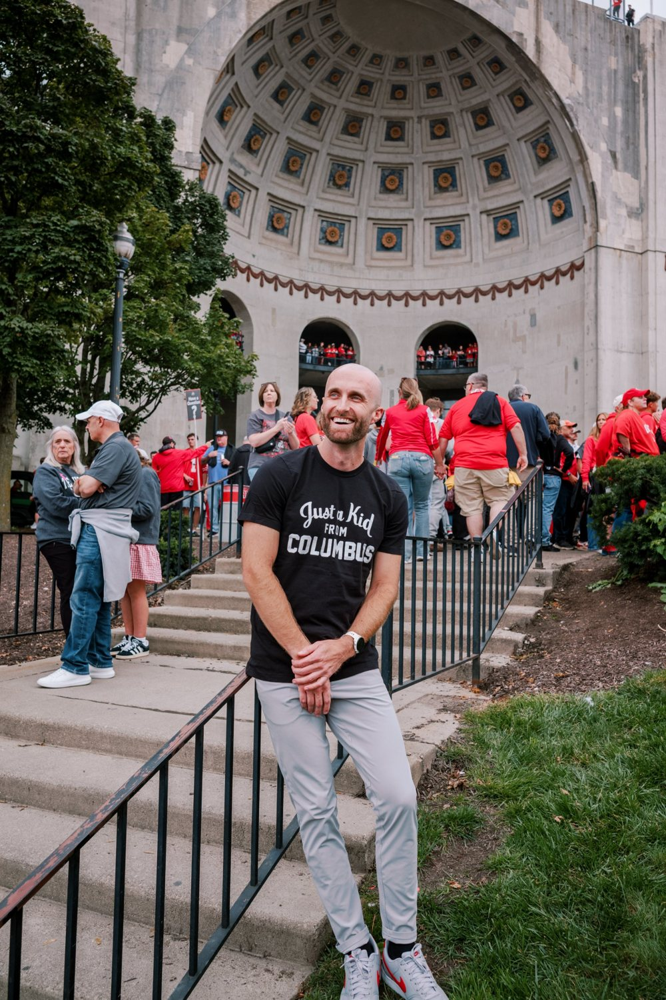

About Me
I grew up in Columbus, and Nationwide Children's Hospital is where I first fell in love with pediatrics. After training in Cincinnati and Boston, coming home to care for the children of Central Ohio is a privilege.
Personal Interests
My greatest teaching accomplishment may have been teaching Brutus Buckeye how to water ski.

Vision
Medicine. To be an outstanding doctor for my neighborhood, my community, and the world.
Clinical. To provide world class evidence-based care to children, especially to those who are overlooked, marginalized, or forgotten.
Research. To contribute to the advancement of child health through novel and uplifting research that impacts learners, patients, populations, and systems.
Education. I aim to educate the next generation of world changers in medicine by leading as a servant, fostering a growth mindset, and developing master adaptive learners.